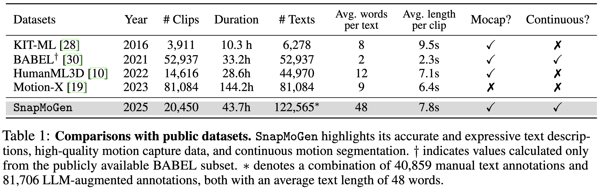

Text-to-motion generation has experienced remarkable progress in recent years. However, current approaches remain limited to synthesizing motion from short or general text prompts, primarily due to dataset constraints. This limitation undermines fine-grained controllability and generalization to unseen prompts. In this paper, we introduce SnapMoGen, a new text-motion dataset featuring high-quality motion capture data paired with accurate, expressive textual annotations. The dataset comprises 20K motion clips totaling 44 hours, accompanied by 122K detailed textual descriptions averaging 48 words per description (versus 12 words of HumanML3D). Importantly, these motion clips preserve original temporal continuity as they were in long sequences, facilitating research in long-term motion generation and blending. We also improve upon previous generative masked modeling approaches. Our model, MoMask++, transforms motion into multi-scale token sequences that better exploit the token capacity, and learns to generate all tokens using a single generative masked transformer. MoMask++ achieves state-of-the-art performance on both HumanML3D and SnapMoGen benchmarks. Additionally, we demonstrate the ability to process casual user prompts by employing an LLM to reformat inputs to align with the expressivity and narration style of SnapMoGen.

Gallery of SnapMoGen Dataset
"The person stands straight, showing dissatisfaction. They stomp their right foot, raising and lowering their arms expressively. They squat twice, then squat lower while dipping their head. Rising, they turn right, wave their arms downward, take two steps right, and squat with their right arm forward and left arm bent at shoulder level. Standing, they jump right, raise their right arm, and mimic throwing something while turning left. Finally, they jump back left, landing on bent knees, lowering their arms."
"The person stands with the body leaning forward with arms down and legs slightly bent at the knees. Then, she turns sharply to the right and runs along a curved path to the right. After a moment, she stops and squats down, placing her hands in front of her. After sitting for a while, she irritably waves her right hand, stands up straight, and turns to the right again."
"The person expressively shows resentment and disappointment. They turn to the right and walk forward assertively on half-bent legs, shaking their hands down twice. After this, the person turns to the left, shakes their hands again and sits first on the right knee, then on both knees. At the end, the person leans to the right, transferring weight to the right knee and leaning on the right hand and tilts the head down."
"The woman sits on the floor with a slightly uneasy posture. Her right leg is bent at the knee close to her body, and her left leg bent at the knee is resting on her right foot. Her left hand is on her right leg, while she leans on her right hand, head tilted down. She then extends her left leg forward, straightens her back, and places her left hand on the floor for support."
"The person sadly stands shuffling from foot to foot. Then into the tree pose from yoga. The right leg is bent at the knee and placed on the left leg and both hands are raised, pushing them together above the head."
"The person stands in a heron pose, bending the right leg and tilting the body to the left while holding the head with both hands. They then release the head, lower the right leg, and spread the arms out before lowering them. The person tilts left, bending the left leg and raising both arms above the head to join them. Next, they crouch with the right leg bent back, resting the right hand on the ground. The left bent leg is positioned forward with the left hand placed on it."
"A person kneels on his right knee, with his right hand on the ground. Then he lowers his left arm, outstretched his left leg to the left, raises his right hand slightly, and stretches his left leg. Then he puts his left hand behind his back, leans to the left, raises his right hand above his head, and bounces to the left and right repeatedly. After that, he lowers his right arm, leans to the right slightly, and bends his left leg."
"The person kneels on their left knee, extending their right leg to the side. They bend their body to the right, with the right arm bent at the abdomen and the left arm reaching over the head. For a warm-up, they bend to the left, switching positions with the left arm on the abdomen and the right arm extending over the head."
"The person is performing barbell squats. They keep their hands at shoulder level on either side and squat several times, bending down a bit."
"The individual is engaged in a training exercise. They step forward on tiptoe with bent arms raised at the sides. They mimic placing a barbell on a rack by lowering their head. Next, they step backward while gradually lowering their hands. Walking in a C-shaped path, they then sit down, leaning backward with hands crossed behind them for support."
"The person lays down on their back with knees bent, preparing for a bench press motion. They raise their bent arms with clenched fists upward, simulating lifting a barbell. Next, they briefly touch their head with both hands before returning to the starting position with hands pointing upwards."
"The person is in a bench press position, lying flat with bent arms. They smoothly raise their bent arms upward, then lower them back down. Repeating the motion, they raise their arms again in a controlled manner."ee
"The person crouches low with knees bent and arms extended sideways like wings. They begin with small hops, gradually increasing height and breadth of their arm flaps. Their torso leans forward as they simulate taking off, rising onto the balls of their feet and stretching limbs outward. Movements are fluid and soaring, embodying the effort and grace of flight."
"Jumps like a frog."
"The person crouches deeply with knees bent and arms hanging between the legs. They push off the ground into a high, forward-directed hop, landing in a squat with hands swinging upward. They repeat this frog-like jump several times in a rhythmic, bouncy motion, using their arms to assist each leap while maintaining a playful posture."
"Slipping on ice."
"The person takes a step and suddenly loses footing, sliding forward with legs split unevenly. Their arms flail outward for balance, body tilted backward. They wobble with quick foot adjustments, attempting to stabilize. After a near fall, they bend knees low and regain control, breathing out with relief and brushing off their clothes."
"A slow, exaggerated zombie walk."
"The person shuffles forward with slow, stiff movements typical of a zombie walk. Feet drag lightly, knees slightly bent, and arms reach out with elbows locked and fingers splayed. The torso leans forward with a slight wobble, and the head tilts awkwardly to one side, emphasizing an eerie, unnatural gait."
"Tiptoeing across a creaky floor."
"With bent knees and raised heels, the person carefully tiptoes across an invisible floor. Each step is cautious and silent, arms out for balance. Occasionally, they freeze mid-step, listening for sounds, then continue with even more care. Their body leans slightly forward, head tilted to scan for obstacles as they proceed."
"Walking like a robot."
"The person walks in rigid, mechanical fashion. Each leg lifts unnaturally high and plants down flat. Arms swing stiffly at 90-degree angles, pausing slightly between each step. Their torso remains upright with minimal rotation. Occasionally, they make jerky turns or freeze mid-step, mimicking the exact, unnatural cadence of a malfunctioning robot."
"Pretending to swim on land."
"The person lies flat on their belly and begins simulating swimming. Arms stretch forward and pull back in a breaststroke pattern while their legs kick alternately behind them. They lift their head occasionally to 'breathe,' and their whole body undulates in sync with each stroke, mimicking smooth swimming in water, despite being grounded."
"Spinning in place like a figure skater."
"The person starts by raising their arms gracefully, then pushes off the ground with one foot to spin in place. Their torso twists fluidly, and arms extend outward for balance. They complete several smooth, controlled rotations, feet gliding lightly and knees bent slightly to maintain momentum, before coming to a gentle stop."
"Angry stomping and shakeing their fist."
"The person stomps heavily on the ground with alternating feet, each step accented by a forceful downward motion. Their fists clench and shake vigorously, arms bent at the elbows. The torso leans forward with tension, and their face expresses anger. Each stomp is accompanied by a slight body shake, emphasizing frustration."
"Playfully chasing after a fluttering butterfly."
"The person moves forward with light, quick steps, arms reaching out and fluttering fingers mimicking chasing a small butterfly. Their torso leans forward with playful anticipation, and their eyes follow the imagined fluttering. Occasionally, they leap or spin lightly to keep pace, ending with a delighted gesture."
"Rowing a boat with slow, rhythmic strokes."
"The person sits or stands and mimics rowing a boat, grasping an imaginary oar with both hands. They perform slow, controlled strokes, pulling back with their arms while leaning torso backward, then pushing forward while leaning torso slightly forward. Legs and feet shift subtly to stabilize each stroke in a rhythmic, flowing motion."
"Walking proudly like a runway model."
"The person walks forward with confidence, swinging their hips gracefully and keeping their shoulders back. Their steps are long and elegant, with one foot crossing slightly in front of the other. Their arms move rhythmically, and they occasionally strike a pose mid-step, like on a fashion runway."
"A person is reacting with surprise, stepping back quickly and raising their hands."
"The person suddenly jolts backward with wide eyes and raised hands. Their torso leans back sharply, knees bend slightly for balance, and their feet shift quickly to step away from the source of surprise. Arms are lifted in a defensive posture, fingers spread wide, and the body radiates shock and sudden caution."
"Boxing with an invisible opponent."
"The person takes a boxer's stance, bouncing lightly on their toes. They throw a few jabs and hoks into the air with intensity, ducking and weaving to dodge counterpunches. Their focus is sharp, and each move is fast and intentional."
"A person is nervously checking their watch repeatedly."
"The person glances at their wrist repeatedly, raising one arm with fingers brushing an imaginary watch. Each glance is accompanied by subtle head tilts and slight furrowing of brows. Their body shifts weight from one foot to the other nervously, shoulders tense, conveying impatience and concern."
Testset prompt: "The individual walks forward with a joyful demeanor, raising both hands enthusiastically. They lean side to side, waving their hands in a playful motion. Returning to a neutral stance, they shift their weight onto the right leg, lean right, and raise their hands upwards."
Testset prompt: "The person stands neutrally, then leans forward, spreading their legs wide. They simulate basketball dribbing with hand gestures, moving their hips side by side. The left hand performs dribbing actions. They pause, turn left, put the right leg forward, and squat slightly before simulating a basketball shot with a small jump."
Testset prompt: "The person leans forward almost 90 degrees and turns the body from the left to the right with the arms along the body. After that, they are dropping somthing from the waist level. They then sway slightly, shifting their body weight from foot to foot and raising their arms to chest level, intertwineing their fingers with each other."
Testset prompt: "Testset prompt: A person appears to be walking alongside a dog. They turn their body to the right and walk with their head down, extending their left hand slightly forward. The person pauses, using their right hand as if to stroke a dog. They then turn left, walking in a circular path, eventually stooping with feet positionied should-width apart."
Testset prompt: "The person sits cross-legged in the lotus position, their legs folded with feet resting on opposite thighs. Their hands are gently placed above their knees as they maintain a serene and meditative posture, exhibiting clamness and stillness."
Testset prompt: " The person imitates a zombie. They put their arms forward, tilt their body slightly downward, and walk wobbly forward, then wobbly step back and level off while standing still."
* Unless otherwise mentioned, prompts are rewritten into expressive text descriptions before being fed into MoMask++.
Ablation Analysis
Impact on VQ Reconstruction
We investigate the impact of the number of residual layers and the number of tokens on VQ reconstruction quality. Additionally, we compare our method against the 6-layer VQ used in MoMask. The number of tokens is calculated based on the encoding of a 320-frame motion sequence. Results show that our approach effectively captures high-fidelity motion details by increasing the number of layers and tokens, enabling better modeling of holistic motion patterns compared to the RVQ used in MoMask.
Generation
We analyze the effect of residual tokens, multi-scale quantization, and prompt rewriting on the final motion generation quality. As shown below, using only a single VQ token sequence (w/o residual VQ) or multiple full-scale token sequences of the same length (w/o multi-scale VQ) results in limited understanding of nuanced text prompts. Moreover, when casual user prompts are directly used (w/o prompt rewriting) for generation without rewriting, the model exhibits significant semantic degradation.
"Someone pretends to be a bird taking flight."
"The person crouches low with knees bent and arms extended sideways like wings. They begin with small hops, gradually increasing height and breadth of their arm flaps. Their torso leans forward as they simulate taking off, rising onto the balls of their feet and stretching limbs outward. Movements are fluid and soaring, embodying the effort and grace of flight."
Ours
w/o prompt rewriting
w/o residual vq
w/o multi-scale vq
"Walking like a robot."
"The person walks in rigid, mechanical fashion. Each leg lifts unnaturally high and plants down flat. Arms swing stiffly at 90-degree angles, pausing slightly between each step. Their torso remains upright with minimal rotation. Occasionally, they make jerky turns or freeze mid-step, mimicking the exact, unnatural cadence of a malfunctioning robot."
Ours
w/o prompt rewriting
w/o residual vq
w/o multi-scale vq
Comparisons
We show one example (#1) from SnapMoGen test set, and two examples using in-the-wild user prompts (#2, 3). For the later two cases, all models take the re-rewritted prompts as input.
Real-world Application
SnapMoGen has led to a launched text2motion feature in LensStudio (v5.11.0) of Snap VR.
Limitations
"A person is dramatically dodging laser beams while crawling forward."
"The person drops low, crawling forward on hands and knees with urgency. They weave their torso and duck their head side to side as if narrowly avoiding invisible laser beams. Arms stretch out to maintain balance while legs push powerfully, body tense with alertness. Their movements are fluid but deliberate, moving forward cautiously with sharp, sudden dodges." "Motion artifacts persist (e.g., sliding, jittering)."
"Skipping forward while juggling imaginary balls."
"The person skips forward energetically, bouncing on alternating feet with light, rhythmic hops. Their arms move in circular patterns as if juggling several invisible balls, tossing them from hand to hand. Their torso sways rhythmically, and they occasionally look upward or to the side to track the imaginary objects, ending the sequence with a playful spin." "Missing semantic cues (e.g., junggling balls)."
"A yoga sun salutation."
"Standing tall, the person reaches both arms toward the sky with a deep inhale. They bend forward slowly at the waist, touching the ground with fingertips. Then they step one leg back into a lunge, lifting the arms overhead in a stretch. They transition into downward dog, hold it briefly, then step forward and return to standing." "Fail on rare motions."
Related Motion Generation Works 🚀🚀
Text2Motion: Diverse text-driven motion generation using temporal variational autoencoder. TM2T: Learning text2motion and motion2text reciprocally through discrete token and language model. TM2D: Learning dance generation with textual instruction. Action2Motion: Diverse action-conditioned motion generation. MoMask: generative masked modeling of 3D human motions.
{kind=link}